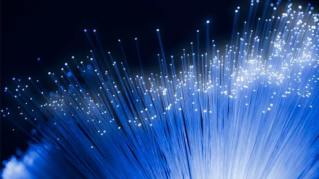

Notícia Esporte
Galvão Bueno fecha acordo para narrar jogos da Copa no SBT, diz jornal
Galvão Bueno, atualmente contratado da Band, apresenta às segundas-feiras o programa Galvão e Amigos. Segundo o jornal, o narrador ainda não comunicou oficialmente à emissora o acerto com o canal da família Abravanel, mas a expectativa é de que Galvão siga no ar com o programa até o início da Copa.
Leia maisNotícia Variedades
Fonte de energia renovável que funciona 24h por dia é a nova queridinha dos japoneses

- Funcionamento: baseia-se na mistura de água doce e salgada para gerar energia.
- Pioneirismo: Japão inaugura sua primeira planta osmótica.
- Desafios: busca por eficiência nas membranas e redução de custos.
Como funciona a energia osmótica?
A energia osmótica utiliza o fenômeno natural da ósmose, onde água doce e água salgada são colocadas em lados opostos de uma membrana semipermeável. Essa diferença de salinidade gera uma pressão que movimenta turbinas conectadas a um gerador, produzindo eletricidade. É também chamada de energia de gradiente salino ou “energia azul”.
Leia maisNotícia Tecnologia
Japão quebra recorde de transmissão de dados com velocidade impressionante
Pesquisadores japoneses do Instituto Nacional de Tecnologia da Informação e Comunicações (NICT), em parceria com a Sumitomo Electric Industries, anunciaram uma conquista revolucionária no campo da transmissão de dados. A equipe quebrou um recorde mundial ao alcançar a impressionante marca de 1,02 petabits por segundo, estabelecendo um novo marco para a velocidade de comunicação digital e abrindo caminho para avanços significativos na conectividade global.
Leia mais